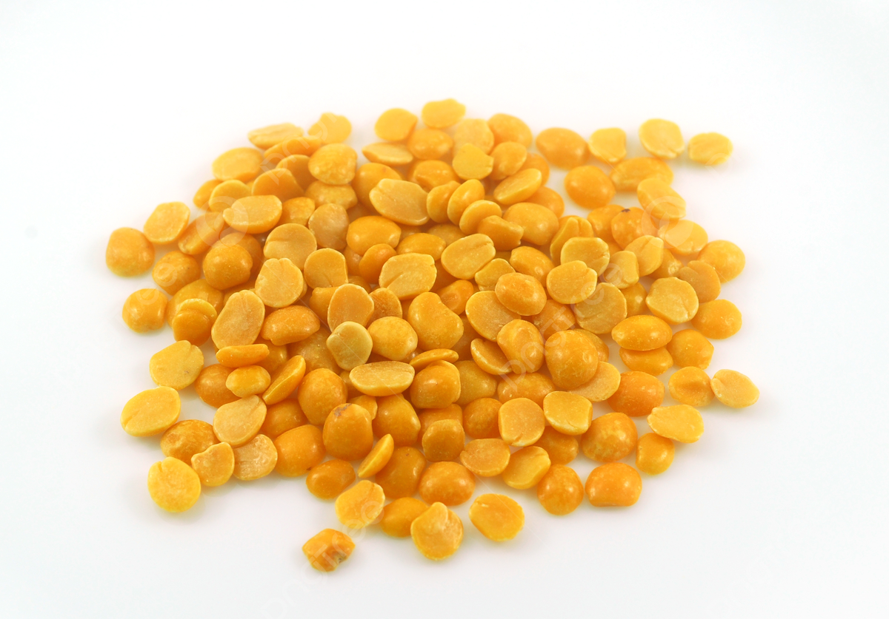

1. Seasons for Growing Arhar

Arhar, also known as pigeon pea, is a warm-season crop that thrives in tropical and subtropical climates. It can be grown in various seasons depending on the region:
- Monsoon: In India and other tropical regions, arhar is typically planted during the monsoon season (June-July) for optimal growth.
- Post-Monsoon: In regions with mild winters, arhar can also be planted after the monsoon for a winter harvest.
- Dry Season: Arhar is drought-tolerant and can be grown in dry seasons with minimal water requirements.